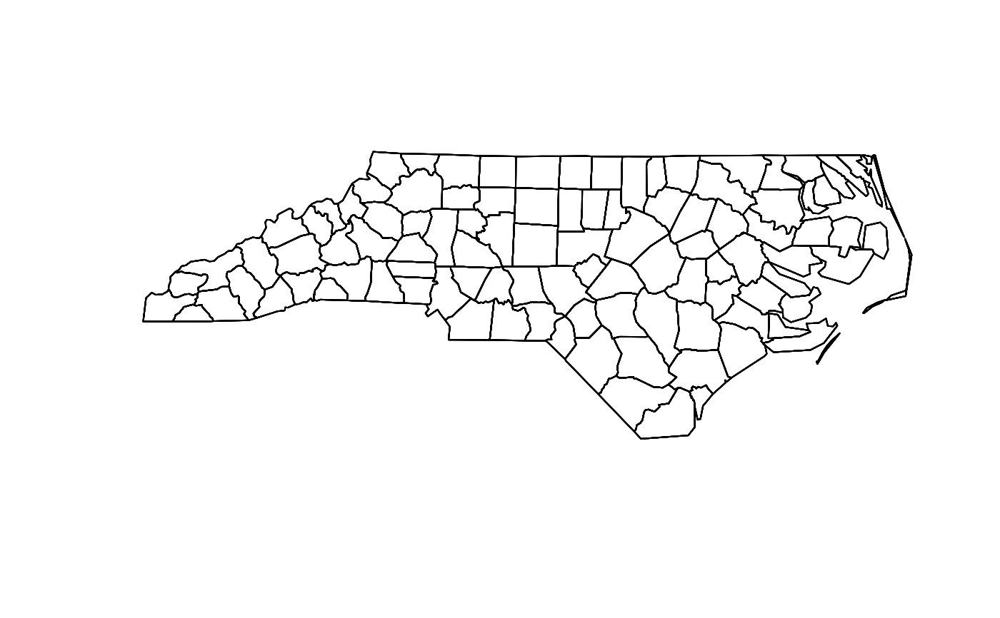

A simulated areal dataset based on the North Carolina county boundaries. It contains three spatial patterns, linear trend, hotspot, and CAR smooth field, each generated at medium and strong signal strengths.
Format
An sf object with 600 rows. It contains the original variables
from nc, together with:
- pattern
Spatial pattern type.
- strength
Signal strength.
- noise_level
Noise level used in the simulation.
- value_sim
Simulated value.
Examples
head(nc_sim)
#> Simple feature collection with 6 features and 22 fields
#> Geometry type: MULTIPOLYGON
#> Dimension: XY
#> Bounding box: xmin: -81.74107 ymin: 36.07282 xmax: -75.77316 ymax: 36.58965
#> Geodetic CRS: NAD27
#> AREA PERIMETER CNTY_ CNTY_ID NAME FIPS FIPSNO CRESS_ID BIR74 SID74
#> 1 0.114 1.442 1825 1825 Ashe 37009 37009 5 1091 1
#> 2 0.061 1.231 1827 1827 Alleghany 37005 37005 3 487 0
#> 3 0.143 1.630 1828 1828 Surry 37171 37171 86 3188 5
#> 4 0.070 2.968 1831 1831 Currituck 37053 37053 27 508 1
#> 5 0.153 2.206 1832 1832 Northampton 37131 37131 66 1421 9
#> 6 0.097 1.670 1833 1833 Hertford 37091 37091 46 1452 7
#> NWBIR74 BIR79 SID79 NWBIR79 value_log10 sd_log2 signal_pattern
#> 1 10 1364 0 19 1.43485757 3.195779 Hotspot
#> 2 10 542 3 12 3.26255163 13.523692 Hotspot
#> 3 208 3616 6 260 8.42584616 1.962855 Hotspot
#> 4 123 830 2 145 0.06256241 4.019426 Hotspot
#> 5 1066 1606 3 1197 105.56071379 4.708246 Hotspot
#> 6 954 1838 5 1237 0.32936560 3.576428 Hotspot
#> uncertainty_pattern signal sd noise value_sim
#> 1 Constant SD -0.6118228 1 -0.1485921 -0.7604149
#> 2 Constant SD -0.6099919 1 -0.1829528 -0.7929446
#> 3 Constant SD -0.5863425 1 -0.8581478 -1.4444903
#> 4 Constant SD -0.5937274 1 0.9581592 0.3644317
#> 5 Constant SD -0.4623688 1 -0.8390769 -1.3014458
#> 6 Constant SD -0.4542846 1 -0.7597243 -1.2140089
#> geometry
#> 1 MULTIPOLYGON (((-81.47276 3...
#> 2 MULTIPOLYGON (((-81.23989 3...
#> 3 MULTIPOLYGON (((-80.45634 3...
#> 4 MULTIPOLYGON (((-76.00897 3...
#> 5 MULTIPOLYGON (((-77.21767 3...
#> 6 MULTIPOLYGON (((-76.74506 3...
plot(sf::st_geometry(nc_sim))
